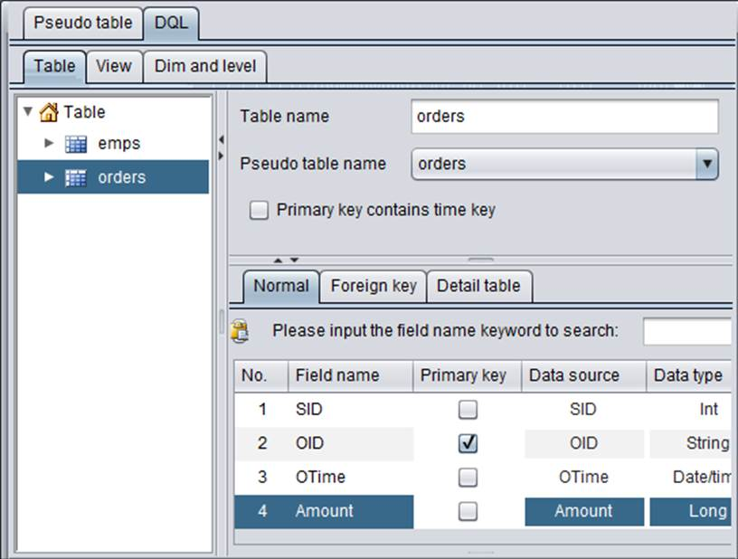
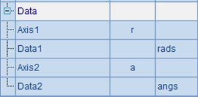
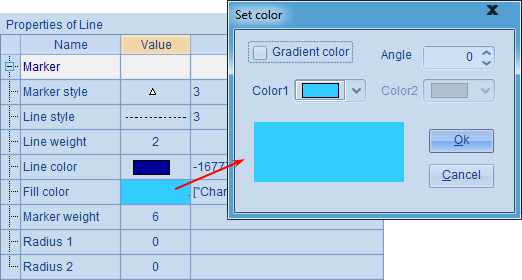
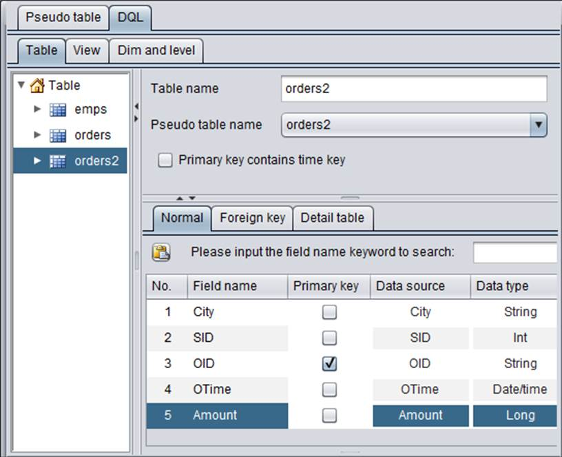
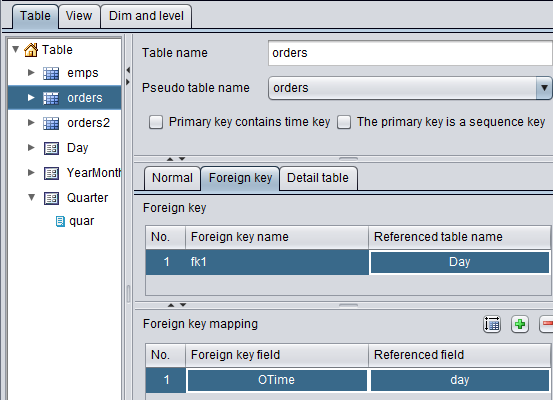
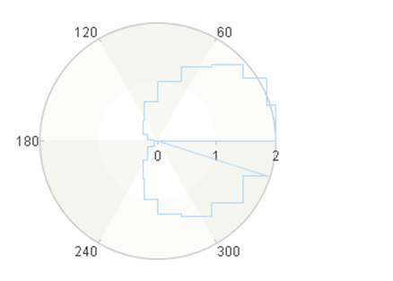

12.6.4 Other properties
esProc allows plotting a chart element in different coordinate systems according to the given data properties. For example, plotting a function graph using lines in a polar coordinate system:
|
|
A |
B |
C |
|
1 |
=canvas() |
20 |
>rads=[],angs=[] |
|
2 |
for B1 |
=360*(A2-1)/B1 |
=1+cos(B2*pi()/180) |
|
3 |
|
>angs=angs|B2 |
>rads=rads|C2 |
|
4 |
=A1.plot("BackGround") |
|
|
|
5 |
=A1.plot("NumericAxis","name":"r","location":3, "scaleNum":2,"regionLineStyle":0,"regionTransparent":0.6) |
|
|
|
6 |
=A1.plot("NumericAxis","name":"a","location":4, "autoCalcValueRange":false,"maxValue":360,"scaleNum":6,"regionLineStyle":0,"regionTransparent":0.6) |
|
|
|
7 |
=A1.plot("Line","endToHead":true,"closedArea":true, "transparent":0,"markerStyle":0,"axis1":"r","data1":rads, "axis2":"a","data2":angs) |
|
|
|
8 |
=A1.draw@p(350,250) |
|
|
The above plotting algorithm plots a cardioid using lines. B2 sets the sample size. The code in the second and third line calculates by loop the coordinate values of the sample points and records their radial and angular coordinates in parameters rads and angs. A5 sets a numeric axis r as the polar axis without grid lines and with the background region transparency being 0.6. A6 sets numeric axis a as the radial axis, setting the maximum angle as 360 degrees and the same background region properties as the polar axis.
A7 plots the line elements by setting data properties, checking Connect head and tail and Closed area properties, and specifying the fill color transparency as 0 and that no data points will be plotted:
 
Below is the plotting result:

Now let¡¯s learn about the line element¡¯s other properties by modifying the plotting algorithm.
By setting Star Line property as true, you will not plot a polyline chart; instead, each end point will be connected with the original point to produce a sun ray plot. That would be the result by modifying A7¡¯s chart parameters:

Below is the plotting result in A8:

This sun ray plot cannot form a closed area, so the checked properties like Connect head and tail, Closed area and Area color are invalid.
Proceed to modify the chart parameters by checking the Step line property:

You¡¯ll get a plotting result like this:

By checking Step Line, neighboring points on the line will be connected by a vertical straight line and a horizontal straight line, instead of a single straight line. Thus a ladder-like line chart will be plotted. This property is useful in plotting charts like a pulse sequence diagram. With Step Line checked, Star Line is invalid.
In addition, you can set Stacking type property to plot a stacked area chart with multiple series and categories. Detailed discussion about this property is available in the section of Stacked column chart in The Column Element.